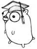

Documentation
The Go programming language is an open source project to make programmers more productive.
Go is expressive, concise, clean, and efficient. Its concurrency mechanisms make it easy to write programs that get the most out of multicore and networked machines, while its novel type system enables flexible and modular program construction. Go compiles quickly to machine code yet has the convenience of garbage collection and the power of run-time reflection. It's a fast, statically typed, compiled language that feels like a dynamically typed, interpreted language.
Installing Go
Getting Started
Instructions for downloading and installing the Go compilers, tools, and libraries.
Learning Go
A Tour of Go
An interactive introduction to Go in three sections. The first section covers basic syntax and data structures; the second discusses methods and interfaces; and the third introduces Go's concurrency primitives. Each section concludes with a few exercises so you can practice what you've learned. You can take the tour online or install it locally.
How to write Go code
Also available as a screencast, this doc explains how to use the go command to fetch, build, and install packages, commands, and run tests.
Effective Go
A document that gives tips for writing clear, idiomatic Go code. A must read for any new Go programmer. It augments the tour and the language specification, both of which should be read first.
Frequently Asked Questions (FAQ)
Answers to common questions about Go.
The Go Wiki
A wiki maintained by the Go community.
More
See the Learn page at the Wiki for more Go learning resources.
References
Package Documentation
The documentation for the Go standard library.
Command Documentation
The documentation for the Go tools.
Language Specification
The official Go Language specification.
The Go Memory Model
A document that specifies the conditions under which reads of a variable in one goroutine can be guaranteed to observe values produced by writes to the same variable in a different goroutine.
Release History
A summary of the changes between Go releases.
Articles
The Go Blog
The official blog of the Go project, featuring news and in-depth articles by the Go team and guests.
Codewalks
Guided tours of Go programs.
- First-Class Functions in Go
- Generating arbitrary text: a Markov chain algorithm
- Share Memory by Communicating
- Writing Web Applications - building a simple web application.
Language
- JSON-RPC: a tale of interfaces
- Go's Declaration Syntax
- Defer, Panic, and Recover
- Go Concurrency Patterns: Timing out, moving on
- Go Slices: usage and internals
- A GIF decoder: an exercise in Go interfaces
- Error Handling and Go
- Organizing Go code
Packages
- JSON and Go - using the json package.
- Gobs of data - the design and use of the gob package.
- The Laws of Reflection - the fundamentals of the reflect package.
- The Go image package - the fundamentals of the image package.
- The Go image/draw package - the fundamentals of the image/draw package.
Tools
- About the Go command - why we wrote it, what it is, what it's not, and how to use it.
- C? Go? Cgo! - linking against C code with cgo.
- Debugging Go Code with GDB
- Godoc: documenting Go code - writing good documentation for godoc.
- Profiling Go Programs
- Data Race Detector - a manual for the data race detector.
- Introducing the Go Race Detector - an introduction to the race detector.
- A Quick Guide to Go's Assembler - an introduction to the assembler used by Go.
More
See the Articles page at the Wiki for more Go articles.
Talks

A Video Tour of Go
Three things that make Go fast, fun, and productive: interfaces, reflection, and concurrency. Builds a toy web crawler to demonstrate these.
Code that grows with grace
One of Go's key design goals is code adaptability; that it should be easy to take a simple design and build upon it in a clean and natural way. In this talk Andrew Gerrand describes a simple "chat roulette" server that matches pairs of incoming TCP connections, and then use Go's concurrency mechanisms, interfaces, and standard library to extend it with a web interface and other features. While the function of the program changes dramatically, Go's flexibility preserves the original design as it grows.
Go Concurrency Patterns
Concurrency is the key to designing high performance network services. Go's concurrency primitives (goroutines and channels) provide a simple and efficient means of expressing concurrent execution. In this talk we see how tricky concurrency problems can be solved gracefully with simple Go code.
Advanced Go Concurrency Patterns
This talk expands on the Go Concurrency Patterns talk to dive deeper into Go's concurrency primitives.
More
See the Go Talks site and wiki page for more Go talks.
Non-English Documentation
See the NonEnglish page at the Wiki for localized documentation.